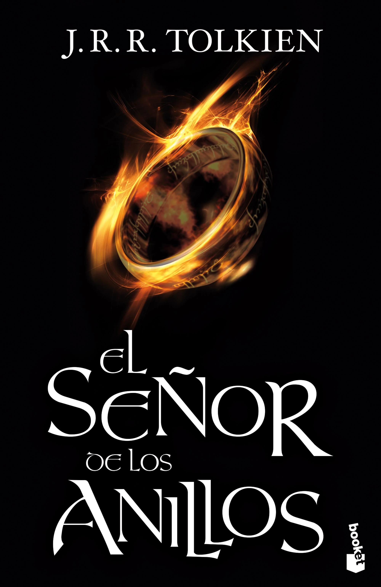

Cafe y tinta
El señor de los anillos
Autor: J. R. R. Tolkien
Año: 1954
Sinopsis: La novela narra el viaje del protagonista principal, Frodo Bolsón, hobbit de la Comarca, para destruir el Anillo Único y la consiguiente guerra que provocará el enemigo para recuperarlo, ya que es la principal fuente de poder de su creador, el señor oscuro Sauron.
